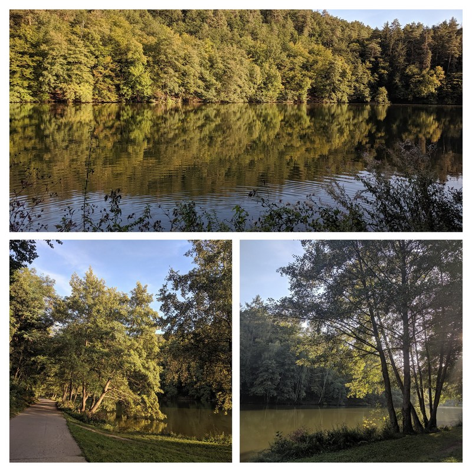
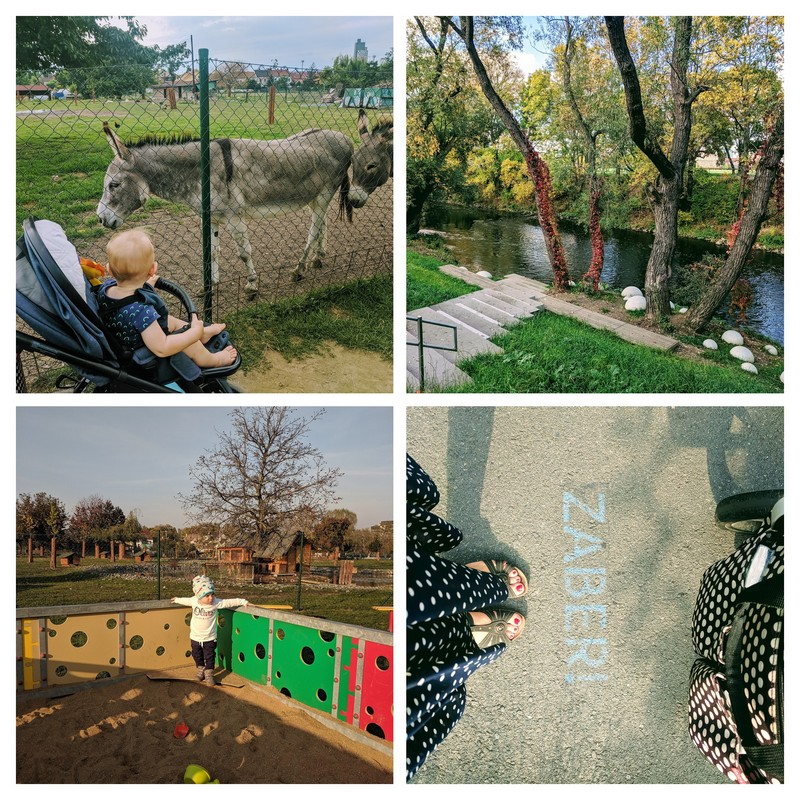
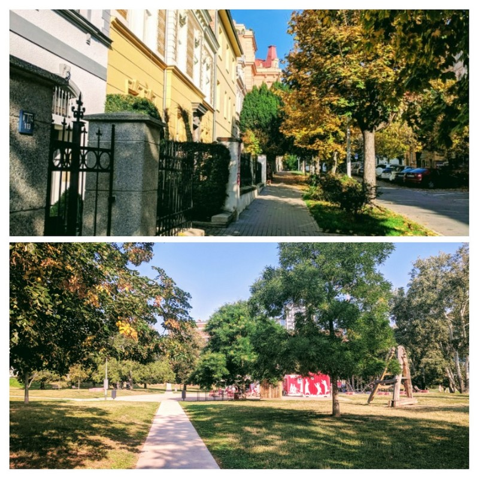
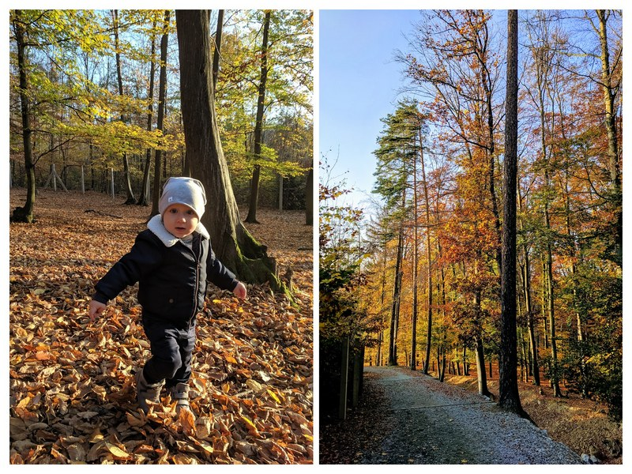

Konečně jsem se dokopala ke slibovanému druhému dílu tipů na kočárkové procházky po Brně. Se zkracujícími se dny bude toho času stráveného venku míň a míň, takže se teď snažíme využívat každý slunečný den na maximum. Jaké jsou naše aktuální oblíbené trasy se můžete dočíst níže :-)
Mariánské údolí
Pokud nejste zrovna z Líšně či blízkého okolí, vyrazíte si sem asi spíš o víkendu, protože cesta z centra zabere poměrně dost času a ten chceme samozřejmě trávit spíš venku než v MHD. Každopádně jestli potřebujete z města uprchnout někam do zeleně, určitě se sem vypravte. S většími dětmi se dá vyzkoušet i nová bobová dráha, ty nejmenší zase určitě ocení různá zvířátka, která můžete po cestě potkat. Pro nás rodiče divokých mláďat je tu i dost míst, kam můžete potomky bez obav “vypustit” a nechat je lítat a dovádět. A je tu prostě krásně :-)

Cyklostezka do Komárova a Modřic
Cyklostezka na Anthropos je naše vycházková stálice, ale stejně rádi vyrážíme podél řeky i opačným směrem. Teď, když Olí navíc “objevil” dopravní prostředky, sem vyrážíme i koukat na vláčky, protože se na několika místech potkává s železnicí, a na letadla, která přistávají v Tuřanech. Naší nejmilejší zastávkou na trase je “farma” v Komárově, kde rádi pozorujeme zvířátka. Mají tu oslíky, kozy, prasátka a všelijaký další zvěřinec a taky je tu hezké hřiště. Pokud je dost sil a dítě v náladě, ráda si procházku protáhnu až k Avionu (tam se dá O. uplatit ještě návštěvou dětského koutku s kuličkama :-)) a do IKEA, odkud zpravidla neodcházím s prázdnou :D A když mi náhodou dojdou síly na zpáteční cestu, nasednu na bus a svezu se zase hezky do centra.

Veveří
Místa, která mi jsou tak nějak souzená, protože je mám spojená se svou alma mater i s dnes již bývalým pracovištěm, ráda navštěvuju i nyní. A musím říct, že v uličkách okolo Veveří to jen kvete - spousta nových obchůdku (třeba knihkupectví Dlouhá punčocha <3) a “fancy” podniků přímo láká k návštěvě. Většinou začínáme procházku na Konečného náměstí, potažmo v Björnsonově sadu, kde je opět super dětské hřiště s pískovištěm i možnost občerstvit se v Piknik Boxu. Pamatuju časy, kdy byl tento park spíš ostudou Brna a dneska je to příjemné místo, kde se dá s klidem strávit půl dne. My ale obvykle pokračujeme s procházkou dál - podle nálady bloumáme Jiráskovou, Čápkovou, Jaselskou… No a když tudy mám čirou náhodou cestu bez dítěte, jen stěží odolávám návštěvě mého oblíbeného obchůdku PlaceBaby na Čápkově O:-)

Obora Holedná
Místo, které je obzvlášť teď na podzim naprosto kouzelné :-) Courat se ve spadaném listí, podívat se na divoká prasátka a číhat na srnky, které se zde volně pohybují… To už pomalu patří k našemu podzimnímu koloritu. Loni jsme zde testovali naše nové nosítko, letos už si tu Olí běhal pěkně po svých. Hlavní pěšinky jsou sjízdné i s kočárkem, ačkoliv místy by se možná šikla ruční brzda, kterou náš kočár nedisponuje.

No a vzhledem k tomu, že už se pomalu blíží roční období, které objevování nových vycházkových tras zas tak moc nepřeje, na další pokračování kočárkové rubriky si asi budete muset počkat do jara. Snad nám ta zima rychle uteče :-)